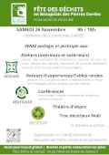

Du 19 au 26 novembre 2022 auront lieu de nombreuses actions autour de la réduction des déchets sur notre territoire. Ateliers, retours d'expériences, conférences, tables rondes, sensibilisation, expositions, etc.
Programme et informations sur https://www.serd-pierres-dorees.fr
Supports de communication
Retrouvez ici les supports de communication pour transmettre à vos administrés, vos adhérents ou votre audience. Les documents sont produits et déposés au fur et à mesure de leur création.
Exemples d'articles
Voici des exemples de communiqués pour insérer dans vos bulletins municipaux, panneau pocket ou newsletters. N'hésitez pas à adapter à votre aise.
Entrefilet
Article
Compostage, démarche zéro déchets, DIY, réutilisation... De plus en plus d'initiatives fleurissent autour de nous pour réduire notre production de déchets. Envie d'en savoir un peu plus ? Venez découvrir les nombreuses actions qui vous seront proposées lors de la tenue de la Semaine Européenne de la Réduction des Déchets sur notre territoire des Pierres Dorées.
Du 19 au 26 novembre 2022, notre territoire arborera les couleurs de cet événement de portée européenne avec le soutien de l'ADEME (Agence française de la transition écologique). Conférences, apéro compost, sensibilisations zéro déchet, fabrication de composteurs, répare café, furoshiki et autres emballages, bourse/troc noël, SEL, ateliers DIY, visite d'une plateforme de gestion de déchets verts, biodiversité liée au compost, expo Déchets d'Œuvre, pesée des déchets des cantines et bien d'autres actions vous seront proposées.
L'événement se déroulera en deux temps. Certaines actions auront lieu dans différentes communes entre le samedi 19 et le vendredi 25 novembre et tous les acteurs se retrouveront le samedi 26 novembre pour une grande journée de clôture au Domaine des Communes (Graves-sur-Anse).
Gratuit et ouvert à tous, c'est le moment de mettre la main à la pâte ou d'échanger avec les pros pour découvrir ou affiner des pratiques qui visent à préserver l'environnement tout en cajolant le porte-monnaie !
Retrouvez le programme et les informations sur cette semaine sur le site serd-pierres-dorees.fr
Visuels

Affiche officielle de la SERD portée par l'ADEME
{kind=link}
organisateurs et partenaires
Les associations / collectifs
- abc21
- Agir Charnay Durable
- Alix o Vert
- logo de Agir à Val d'Oingt
- logo de La Cabane à soi
- logo de Demain c'est Ici et Maintenant
- logo de Écolibris de Morancé
- logo de LabCECSY
- logo de Mines de Liens
- logo de Souffle d'Idées
- Villes et Villages Terre Durable
{kind=link}
{kind=link}
{kind=link}
{kind=link}
{kind=link}
{kind=link}
{kind=link}
Les institutions
{kind=link}
Imprimés
- 
Prospectus d'annonce de la Fête des déchets (journée de clôture de la SERD du 26)
{kind=link}
QRCODE
Ce QRCODE mène vers le site internet de l'événément, utilisez-le dans vos communiquer pour permettre à votre audience d'accéder simplement à notre site depuis leur smartphone.